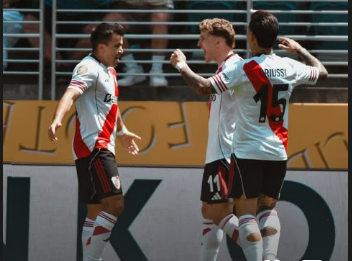

River debutó con el pie derecho en el Mundial de Clubes
River Plate venció 3-1 a Urawa Red Diamonds en el estadio Lumen Field de Seattle por la primera fecha del grupo E de la fase de grupos del Mundial de Clubes. Los goles del “Millonario” fueron de Facundo Colidio, Sebastian Driussi y Maximiliano Meza.
Con la particularidad de ser, hasta el momento, el partido con la menor convocatoria
de toda la fase preliminar del certamen con 11.974 espectadores en el estadio, el
conjunto de Marcelo Gallardo le ganó a los Reds sin brillar ni ser apabullante con
unas estadísticas de tan solo 5 remates al arco en los 90 minutos.
En el arranque, River comenzó más propositivo que el conjunto japonés y esa
intencionalidad logró plasmarse a los 12 minutos del primer tiempo. Marcos Acuña
lanzó un buen centro que conectó Facundo Colidio aprovechando el pobre marcaje
del Urawa Red, para así, poner al equipo argentino por encima del marcador.
La primera mitad mostró la misma dinámica, El Millonario con la pelota y el equipo
japonés aprovechando las llegadas para intentar intimidar a Franco Armani, que se
mostró solvente bajo los tres palos. Así concluyeron los primeros 45 minutos con la
leve ventaja para el conjunto riverplatense.
Ya en el segundo tiempo, el conjunto de Nuñez salió al campo de juego con la
misma idea: manejar el partido con el control del balón e intentar ampliar la ventaja
en el marcador aprovechando los despistes del rival. Así llegó el segundo gol a los 3
minutos. El defensor del equipo de Maciej Skorża, Marius Høibråten, despejó de
forma poco fortuita y Sebastián Driussi tomó ventaja de la situación y definió. En esa
jugada, el delantero de 29 años salió lesionado y, aparentemente, podría perderse el
resto del Mundial de Clubes.
A partir de aquí, el encuentro se desarrolló sin exabruptos hasta el minuto 15 del
segundo tiempo cuando, en un contraataque de conjunto asiatico, Acuña atropelló a
Takuro Kaneko y el árbitro sancionó penal. El encargado de patear fue Yusuke
Matsuo y le pegó pegado al palo derecho de Armani para descontar. Sin embargo,
al minuto 27, luego de nuevo un centro del “Huevo”, esta vez desde el córner,
encontró la cabeza de Maximiliano Meza para subir al marcador el 3-1 definitivo.
Con esta victoria, River suma tres puntos cruciales para soñar con los octavos de final.
SÍNTESIS
River Plate
1. Franco Armani (C); 4. Gonzalo Montiel, 6. Germán Pezella, 28. Lucas Martínez Quarta
21. Marcos Acuña; 22. Kevin Castaño, 24. Enzo Pérez, 26.Ignacio Fernandez;
30. Franco Mastantuono, 15. Sebastian Driussi, 11. Facundo Colidio.
Suplentes: 25. Jeremias Ledesma; 16. Fabricio Bustos, 14. Leandro Gonzalez Pires,
17. Paulo Diaz, 2. Federico Gattoni, 20. Milton Casco, 5. Matías Kranevitter, 29. Rodrigo Aliendo,
8. Maximiliano Meza, 34. Giuliano Galoppo, 10. Manuel Lanzini, 31. Santiago Simón
, 38. Ian Subiabre, 18. Gonzalo Martinez, 9. Miguel Angél Borja.
Cambios: (1’ST) 34. Guiliano Galoppo por 24. Enzo Perez; (11’ST)
9. Miguel Ángel Borja por 15. Sebastián Driussi;
(30’ST) 18. Gonzalo Martinez por 11. Facundo Colidio; (44’ST)
20. Milton Casco por 21.Marcos Acuña.
Urawa Red Diamonds
1. Shusaku Nishikawa; 4. Hirokazu Ishihara, 3. Danilo Boza, 5. Marius Høibråten,
8. Yoichi Naganuma; 11. Samuel Gustafson, 25. Kaito Yasui;77. Takuro Kaneko,
8. Matheus Sávio,13. Ryoma Watanabe; 24. Yusuke Matsuo
Suplentes: 41. Rio Nitta, 39. Jumpei Hayakawa, 35. Rikito Inoue, 31. Shun Yoshida,
28. Kenta Nemoto, 21. Tomoaki Okubo, 18. Toshiki Takahashi, 16. Ayumi Niekawa,
10. Showa Nakajima, 26. Takuya Ogiwara, 14. Takahiro Sekine, 12. Thiago Santos Santana
, 9. Genki Haraguchi, 6. Taishi Matsumoto.
Cambios: (26’ST) 8. Matheus Savio por 12. Thiago Santos Santana
, 77. Takuro Taneko por 14. Takahiro Sekine;
36’ST) 25. Kaito Tasui por 6. Taishi Matsumoto,
88. Yoichi Naganuma por 26. Takuya Ogiwara;
(43’ST) 11. Samuel Gustafson por 9. Genki Haraguchi
TERNA ARBITRAL
Árbitro: Félix Zwayer
Asistente 1: Robert Kempter
Asistente Christian Dietz
VAR: Bastian Dankert
Amonestados: 24. Enzo Perez (RIV) a los 24' PT, 11. Samuel Gustafson (URA) a los 34' PT
, 21. Marcos Acuña (RIV) a los 13' ST, 6. Germán Pezella (RIV) a los 15' ST
31. Ryoma Watanabe (URA) a los 42' ST, 34. Guiliano Galoppo (RIV) a los 47´ST